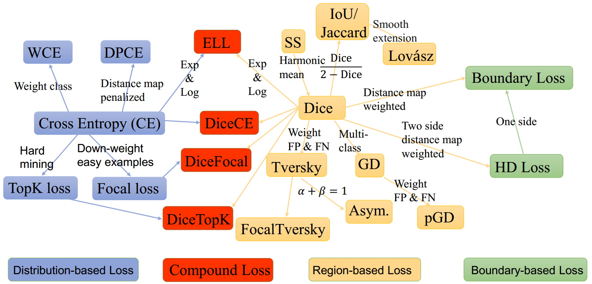

Segmentation Loss Odyssey
这篇paper是一个极为简短的对于语义分割Loss的review. 开源的代码里面用pytorch简要地实现了本文提到的所有loss函数。文章毫不拖泥带水，近乎于笔记小抄。其ReadME是一个很好的reference平台。

原文README
| Date | First Author | Title | Conference/Journal |
|---|---|---|---|
| 202004 | J. H. Moltz | Contour Dice coefficient (CDC) Loss: Learning a Loss Function for Segmentation: A Feasibility Study | ISBI |
| 202003 | Suprosanna Shit | clDice -- a Topology-Preserving Loss Function for Tubular Structure Segmentation (pytorch) | arXiv |
| 202002 | TBD | Uncertainty-weighted Loss: Function for Medical Image Segmentation using Deep Convolutional Neural Network (paper) | MIDL 2020 |
| 201912 | Yuan Xue | Shape-Aware Organ Segmentation by Predicting Signed Distance Maps (arxiv) | AAAI 2020 |
| 201912 | Xiaoling Hu | Topology-Preserving Deep Image Segmentation (paper) | NeurIPS |
| 201912 | JohannesC.Paetzold | clDice-a Novel Connectivity-Preserving Loss Function for Vessel Segmentation (paper) | MedNeurIPS2019 |
| 201910 | Shuai Zhao | Region Mutual Information Loss for Semantic Segmentation (paper) (pytorch) | NeurIPS 2019 |
| 201910 | Shuai Zhao | Correlation Maximized Structural Similarity Loss for Semantic Segmentation (paper) | arxiv |
| 201908 | Pierre-AntoineGanaye | Removing Segmentation Inconsistencies with Semi-Supervised Non-Adjacency Constraint (paper) (official pytorch) | Medical Image Analysis |
| 201906 | Xu Chen | Learning Active Contour Models for Medical Image Segmentation (paper) (official-keras) | CVPR 2019 |
| 20190422 | Davood Karimi | Reducing the Hausdorff Distance in Medical Image Segmentation with Convolutional Neural Networks (paper) | TMI 201907 |
| 20190417 | Francesco Caliva | Distance Map Loss Penalty Term for Semantic Segmentation (paper) | MIDL 2019 |
| 20190411 | Su Yang | Major Vessel Segmentation on X-ray Coronary Angiography using Deep Networks with a Novel Penalty Loss Function (paper) | MIDL 2019 |
| 20190405 | Boah Kim | Multiphase Level-Set Loss for Semi-Supervised and Unsupervised Segmentation with Deep Learning (paper) | arxiv |
| 201901 | Seyed Raein Hashemi | Asymmetric Loss Functions and Deep Densely Connected Networks for Highly Imbalanced Medical Image Segmentation: Application to Multiple Sclerosis Lesion Detection (paper) | IEEE Access |
| 201812 | Hoel Kervadec | Boundary loss for highly unbalanced segmentation (paper), (pytorch 1.0) | MIDL 2019 |
| 201810 | Nabila Abraham | A Novel Focal Tversky loss function with improved Attention U-Net for lesion segmentation (paper) (keras) | ISBI 2019 |
| 201809 | Fabian Isensee | CE+Dice: nnU-Net: Self-adapting Framework for U-Net-Based Medical Image Segmentation (paper) | arxiv |
| 20180831 | Ken C. L. Wong | 3D Segmentation with Exponential Logarithmic Loss for Highly Unbalanced Object Sizes (paper) | MICCAI 2018 |
| 20180815 | Wentao Zhu | Dice+Focal: AnatomyNet: Deep Learning for Fast and Fully Automated Whole-volume Segmentation of Head and Neck Anatomy (arxiv) (pytorch) | Medical Physics |
| 201806 | Javier Ribera | Weighted Hausdorff Distance: Locating Objects Without Bounding Boxes (paper), (pytorch) | CVPR 2019 |
| 201805 | Saeid Asgari Taghanaki | Combo Loss: Handling Input and Output Imbalance in Multi-Organ Segmentation (arxiv) (keras) | Computerized Medical Imaging and Graphics |
| 201709 | S M Masudur Rahman AL ARIF | Shape-aware deep convolutional neural network for vertebrae segmentation (paper) | MICCAI 2017 Workshop |
| 201708 | Tsung-Yi Lin | Focal Loss for Dense Object Detection (paper), (code) | ICCV, TPAMI |
| 20170711 | Carole Sudre | Generalised Dice overlap as a deep learning loss function for highly unbalanced segmentations (paper) | DLMIA 2017 |
| 20170703 | Lucas Fidon | Generalised Wasserstein Dice Score for Imbalanced Multi-class Segmentation using Holistic Convolutional Networks (paper) | MICCAI 2017 BrainLes |
| 201705 | Maxim Berman | The Lovász-Softmax loss: A tractable surrogate for the optimization of the intersection-over-union measure in neural networks (paper), (code) | CVPR 2018 |
| 201701 | Seyed Sadegh Mohseni Salehi | Tversky loss function for image segmentation using 3D fully convolutional deep networks (paper) | MICCAI 2017 MLMI |
| 201612 | Md Atiqur Rahman | Optimizing Intersection-Over-Union in Deep Neural Networks for Image Segmentation (paper) | 2016 International Symposium on Visual Computing |
| 201606 | Fausto Milletari | "Dice Loss" V-net: Fully convolutional neural networks for volumetric medical image segmentation (paper), (caffe code) | International Conference on 3D Vision |
| 201605 | Zifeng Wu | TopK loss Bridging Category-level and Instance-level Semantic Image Segmentation (paper) | arxiv |
| 201511 | Tom Brosch | "Sensitivity-Specifity loss" Deep Convolutional Encoder Networks for Multiple Sclerosis Lesion Segmentation (paper) (code) | MICCAI 2015 |
| 201505 | Olaf Ronneberger | "Weighted cross entropy" U-Net: Convolutional Networks for Biomedical Image Segmentation (paper) | MICCAI 2015 |
| 201309 | Gabriela Csurka | What is a good evaluation measure for semantic segmentation? (paper) | BMVA 2013 |
Most of the corresponding tensorflow code can be found here.
本文 citation
@article{SegLossOdyssey,
title={Segmentation Loss Odyssey},
author={Ma Jun},
journal={arXiv preprint arXiv:2005.13449},
year={2020}
}